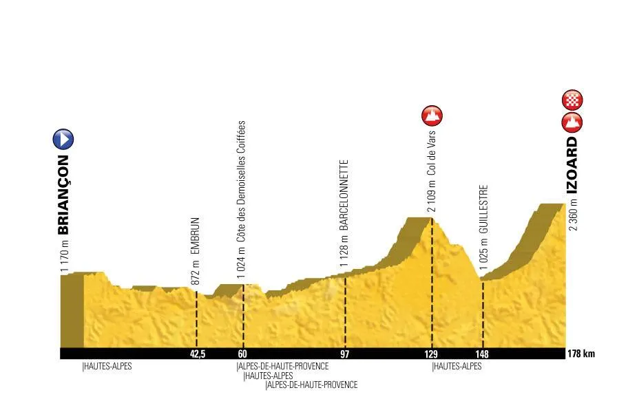
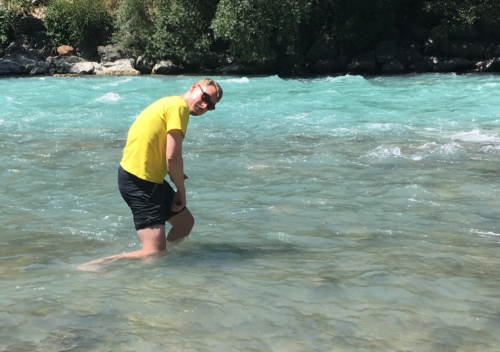
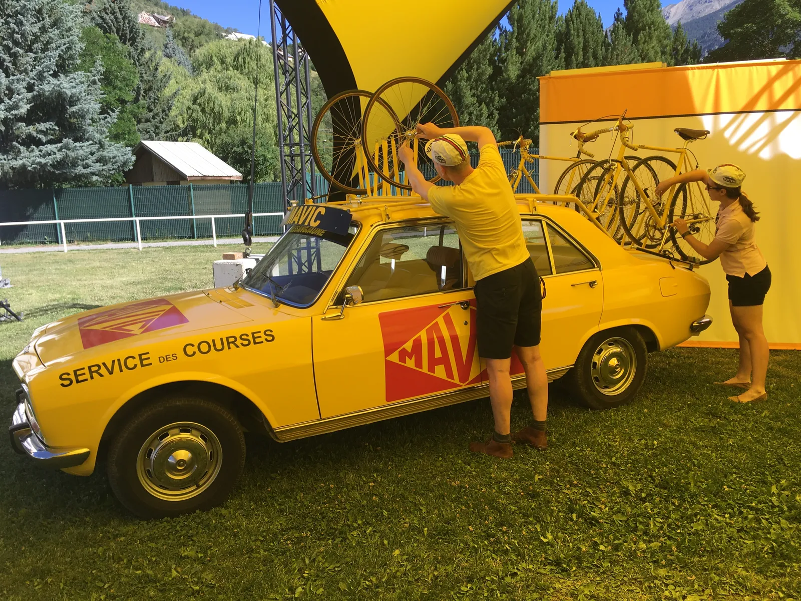

Optakt: Squadra Molteni kører benhård Tour-etape på søndag

Squadra Molteni fik afslag på deres ansøgning om wildcard til Tour de France. Men på søndag stiller holdet til start på amatør-udgaven af 18. etape fra Briancon til Col d’Izoard. Og det bliver på stål og i uld!
På søndag bliver det første gang siden 1976, at Squadra Molteni stiller til start på en Tour de France etape. Og det er ikke hvilken som helst etape. Det er 18. etape, der, over 180 km. og 3500 højdemeter, passerer Col de Vars og slutter Col d’Izoard i 2.360 meters højde.
– Da ASO afviste vores ansøgning om wildcard til Tour-starten i Düsseldorf, vidste vi, at vi måtte nøjes med amatør-udgaven. Eneste forskel er egentlig, at feltet blot er en smule større, udtaler kaptajn Niels Bjørnsteen.
Squadra Molteni stiller som ved La Marmotte sidste år til start på deres 40 gamle stålcykler og tykke uldtrøjer.

Der er tale om l’Etape du Tour, som er en tro kopi af 18. Etape af dette års Tour de France. Cykelløbet arrangeres hvert år af ASO, og bliver afholdt på en af de store bjergetaper. 15.000 cykelmotionister stiller til start.
4 ryttere er klar til at angribe fra start
Holdet har udtaget den formstærke Niels Bjørnsteen som kaptajn, supersprinteren Grane Maaløe, med tilhørende stagiaire lead-out i form af Jens Wunderkind, og til sidst er løjtnant Kasper Sørensen udtaget.
Alle er klar til start. Jens og Grane er på vej fra Dolomitterne i en faldefærdig Citröen HY, og Niels kommer direkte fra Dr. Schultz’s klinik i det Gamle Østtyskland, hvor han har fået en dosis “Medizin für schnelles Fahrradfahren”.
Kasper er kørt i forvejen med et par hurtige damer, som han lærte at kende på Mallorca. Lisbeth og Tina fra KDC samt Torta Mama Maria. De skal nemlig også køre l’Etape du Tour.
– Vi har i dag været til indskrivning, og kigget konkurrenterne ud. Taktikken er klar: Mens englænderne og franskmændene kigger på hinanden, så angriber vi i højre og venstre, udtaler Kasper Sørensen.

Ruten: Hård og varm!
Starten går i Briancon, og starter ud med et par rullende bakker, hvorefter to legendariske bjerge skal forceres. Col de Vars og Col d’izoard der har været benyttet hhv. 33 og 35 gange i Tour France.
Det var på netop Col d’Izoard at Eddy Merckx i 1972 satte Luis Ocana på plads, og grundlagde en af sine mange Tour sejre. Molteni har selvfølgelig tænkt sig, at gøre kunststykket ære på søndag.
Det bliver et hårdt løb. Det ser ud til at blive utrolig varmt, og med størstedelen af de 3.500 højdemeter på den sidste del af ruten, så er der lagt op til en udfordring af de helt store.
– Vi har regnet på det, og selvom vi kører med et snit på 44,56 km./t., så vil vores nedfrosne sorte belgiske øl i baglommen være over 20 grader varme, når vi er halvvejs, udtaler Niels Bjørnsteen.
Rigtig Tour-stemning

Til at sørge for den rigtige Tour-følelse, er der både de velkendte gule Mavic servicebiler, motorcykler og gendarmer, der sørger for, at hele ruten er totalt spærret af for biler.
– Alle veje er totalt afspærret, og der er masser af mennesker på gaderne. Alle byerne er allerede pyntet op til Tour de France, og indbyggerne bruger det som opvarmning til Tour De France. På bjergene er de første hardcore fans kommet i deres autocampere, og de er med til at skabe den helt rigtige stemning, udtaler Kasper, der har kørt løbet 3 gange tidligere.
Forza Molteni!